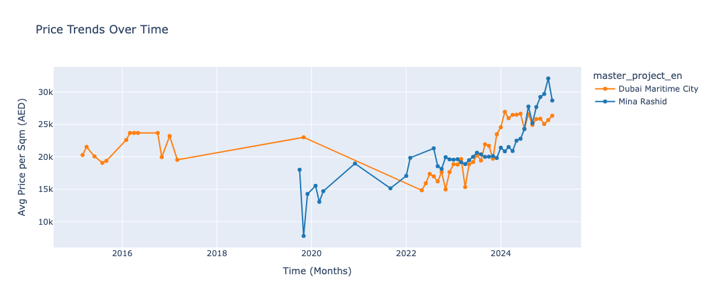
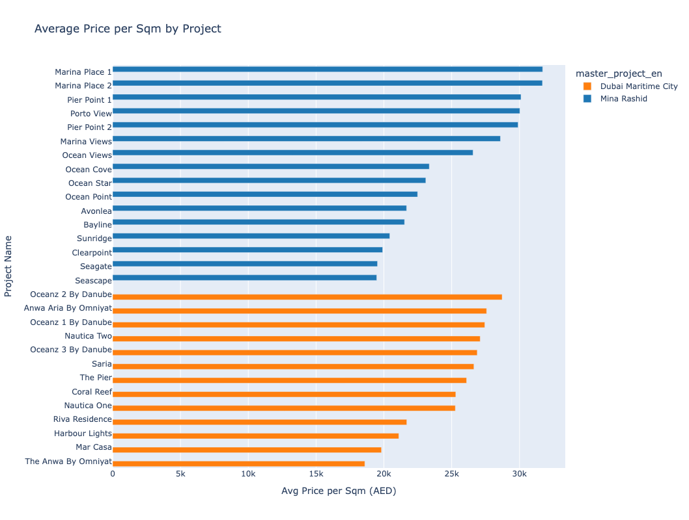
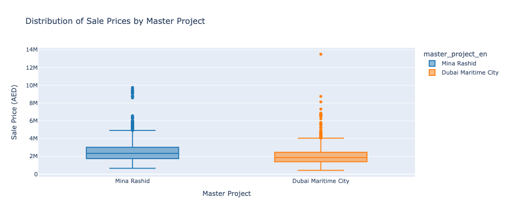
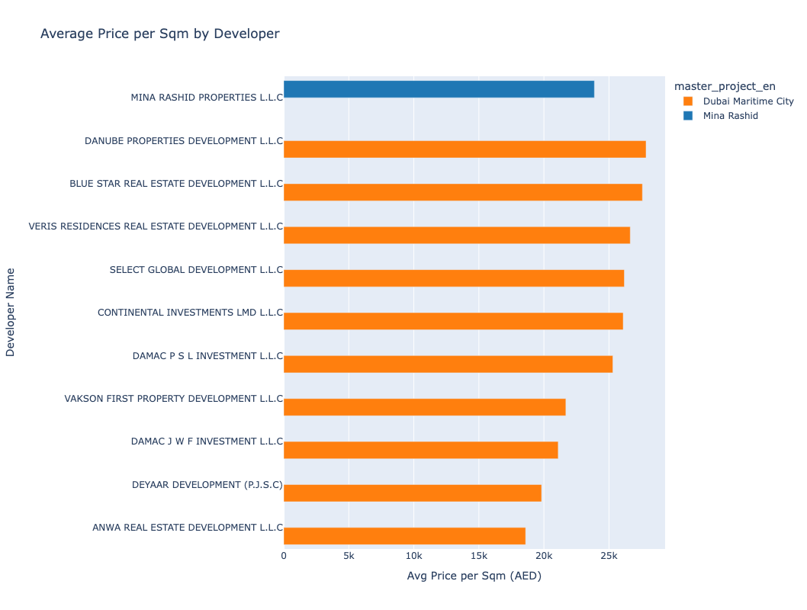
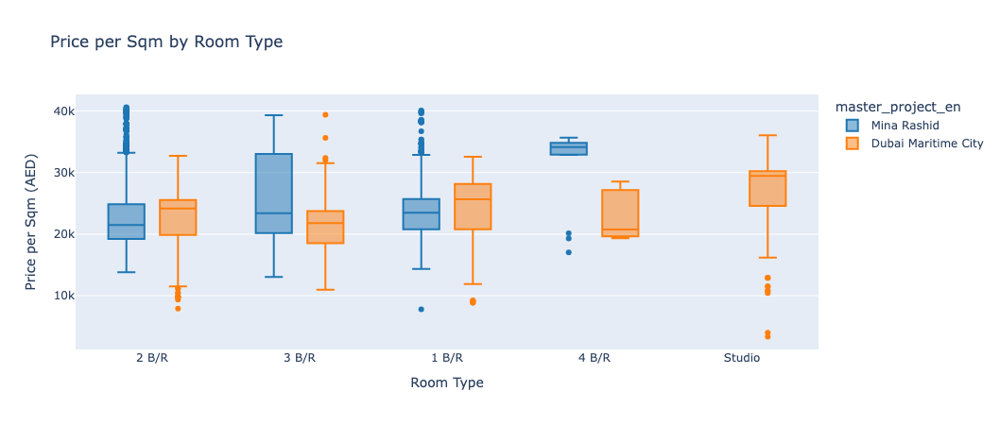

FEBRUARY 16, 2025
Real Estate Market Analysis: Mina Rashid & Dubai Maritime City 🏡📊
Dubai's real estate market is evolving fast, and I've taken a data-driven approach to analyze Mina Rashid & Dubai Maritime City—two prime investment areas. This comprehensive study provides in-depth insights to help real estate investors, agents, and analysts understand property price trends, rental yields, and investment potential.
Project Overview
This project provides an in-depth analysis of real estate transactions in Mina Rashid and Dubai Maritime City, two emerging real estate hubs in Dubai, UAE. Using real estate transactions data covering property sales and mortgages from multiple years, I analyzed price per sqm, transaction values, property types, and location data to identify market trends, pricing variations, and investment patterns.
1️⃣ Property Prices & Sales Trends
The analysis reveals key insights about the property market in both areas:
- Mina Rashid's median price per sqm: AED 23,967
- Dubai Maritime City's median price per sqm: AED 25,013
- Sales dominated by off-plan properties: Approximately 95% of transactions
These findings show that Dubai Maritime City commands slightly higher prices per square meter, while both areas are heavily focused on off-plan developments, indicating strong investor confidence in future growth.
 2️⃣ Most Expensive Developers & Projects
The analysis identified the top-performing developers and premium projects:
- Top Developers: Danube Properties, Omniyat, Damac
- Highest price per sqm projects: "Oceanz 2 By Danube" and "Marina Place 1"
These developers have established themselves as premium players in the market, with projects that command higher prices due to quality, location, and brand reputation.
 3️⃣ Investment Potential & Market Stability
The analysis reveals important insights for investors:
- Price Stability: Dubai Maritime City shows lower price volatility, making it more stable for long-term investments
- Price Growth Trends: Both areas show strong appreciation trends in 2023-2024
- Best Investment Strategy:
- Long-term rentals in Mina Rashid
- Flipping properties in Dubai Maritime City
Key Insights Summary
The analysis provides actionable insights for different types of investors:
- For Long-term Investors: Mina Rashid offers better opportunities for rental yields with lower price volatility in Dubai Maritime City for stability
- For Flippers: Dubai Maritime City shows better potential for short-term gains
- For Premium Buyers: Focus on Danube Properties, Omniyat, and Damac developments, particularly "Oceanz 2 By Danube" and "Marina Place 1"
- Market Trend: Strong growth in both areas indicates healthy market conditions with 95% off-plan sales showing strong investor confidence
Technical Approach
This analysis was conducted using Python and Jupyter Notebook, leveraging data analysis techniques including:
- Data cleaning and preprocessing
- Statistical analysis and price trend identification
- Visualization of key metrics and distributions
- Comparative analysis between locations and developers
- Investment strategy recommendations based on data insights
Why This Matters
Real estate investment decisions require solid data-backed insights. This analysis helps investors, agents, and analysts make informed decisions by providing:
- Clear price benchmarks for both areas
- Developer performance comparisons
- Market stability indicators
- Investment strategy recommendations based on data
Whether you're in real estate, data analytics, or investment, having access to comprehensive market analysis like this can be the difference between a good investment decision and a great one.
📈 View the full analysis, code, and all visualizations on GitHub →
What are your thoughts on Dubai's real estate trends? I'd love to connect and discuss data-driven approaches to real estate investment!
👉 Check out Scrimba's Full-Stack Developer Career Path
This is an affiliate link that helps support my learning journey at no extra cost to you. You may also receive a discount!